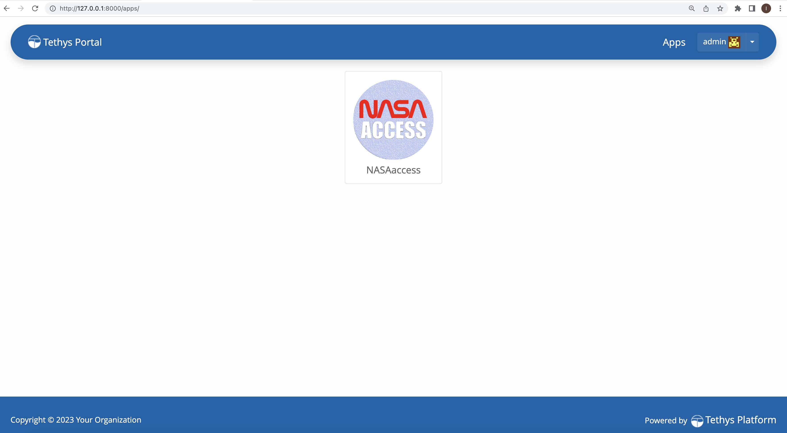

2. NASAaccess Tethys Guide

2.1. About
The NASAaccess platform is available as software packages (i.e., R and conda packages) as well as an interactive format web-based environmental modeling application for earth observation data developed in the Tethys Platform framework (https://www.tethysplatform.org/). NASAaccess software can generate gridded ascii tables of climate CMIP5, CMIP6, and earth observation remote sensing data (GPM, TRMM, GLDAS) needed to drive various hydrological models (e.g., VIC, RHESSys, SWAT …etc.). The NASAaccess has been envisioned to lower the technical barrier and simplify the process of accessing scalable distributed computing resources and leverage additional software for data and computationally intensive modeling frameworks. NASAaccess Tethys web-based application can be used for accessing, reformatting, and visualizing climate and earth observation remote sensing gridded time series data as well.
NASAaccess Tethys web-based application home window
2.2. How it works
The NASAaccess Tethys Application is simply a user interface for passing arguments into the NASAaccess functions by calling the r-nasaaccess conda package (https://anaconda.org/conda-forge/r-nasaaccess). Using a combination of dropdowns, datepickers, and checkboxes, the app allows the user to select a watershed boundary, DEM, date range, and NASAaccess function(s) to pass to the server for running the selected NASAaccess function(s).
2.3. Requirements
- Windows:
Setup a VirtualBox Machine via https://www.virtualbox.org/wiki/Downloads
- Windows/MacOS/Linux:
Anaconda (https://docs.anaconda.com/anaconda/install/index.html) or miniconda (https://docs.conda.io/en/latest/miniconda.html)
2.4. Installation/Setup
- EarthData:
NASAaccess needs a user registration access with Earthdata (https://www.earthdata.nasa.gov/). Users should set up a registration account(s) with Earthdata login as well as authorizing NASA GES DISC data access. Please refer to https://disc.gsfc.nasa.gov/data-access for further details.
- Tethys:
The NASAaccess Tethys Application requires the Tethys Platform to be installed beforehand. The Tethys Platform Framework installation process can be installed in a development and production environment. There is a couple of differences between both installations:
The production installation uses a combination of the NGINX and Daphne servers.
Changes Are Not Automatically Loaded in the production server, but in the development server
Debug Disabled to prevent sensitive information from being leaked in the production server
Static Files Collected are collected to one location to be served more efficiently by NGINX.
Workspaces are collected to one location so they can be more easily backed up.
NGINX is given permission to access the static files and workspaces to be able to serve them.
- Development:
The installation of tethys in a development environment serves to contribute to the development of new applications and of the Tethys platform itself. The following are the required steps:
1. Create a new conda environment and install the Tethys Platform by running the following command:
conda create -n tethys -c tethysplatform -c conda-forge tethys-platform
2. Activate the Tethys conda Environment:
conda activate tethys
3. Generate a portal_config.yml file containing custom configurations such as the database and other local settings by running the following command:
tethys gen portal_config
Tethys Platform requires a PostgreSQL database server. There are several options for setting up a DB server: local, docker, or dedicated. The Tethys platform can also be used to create a local server that creates and migrates the tables associated with the Tethys platform framework by running:
a. Local instance
tethys db configure
b. Docker local instance (requires docker installed beforehand)
tethys docker init -c postgis tethys docker start -c postgis PGPASSWORD=<POSTGRES_PASSWORD> tethys db configure --username <TETHYS_DB_USERNAME> --password <TETHYS_DB_PASSWORD> --superuser-name <TETHYS_DB_SUPER_USERNAME> --superuser-password <TETHYS_DB_SUPER_PASSWORD> --portal-superuser-name <PORTAL_SUPERUSER_USERNAME> --portal-superuser-email '<PORTAL_SUPERUSER_EMAIL>' --portal-superuser-pass <PORTAL_SUPERUSER_PASSWORD>
5. Install r-nasaaccess in the tethsy environment:
conda install -c conda-forge r-nasaaccess
6. Initialize tables in persistent store databases:
tethys syncstores nasaaccess
7. Finally start the Tethys development server:
tethys manage start
- Production:
Installation in a production environment can be a manual installation (performing all of the production configuration steps manually) or a docker deployment. The following steps assumed the installation of Tethys in an Ubuntu production server (Note that before installing the Tethys platform, the following requirements needs to be installed).
Requirements:
PostgreSQL
NGINX
Supervisor
conda/mamba
Installation steps:
Tethys Configuration:
- Install the Tethys platform via conda or mamba
mamba create -n tethys -c tethysplatform -c conda-forge tethys-platform
- Generate a portal_config.yml
tethys gen portal_config
PostgreSQL Configuration:
- Set Database Settings in the portal_config.yml
tethys settings --set DATABASES.default.NAME tethys_platform --set DATABASES.default.USER <TETHYS_DB_USERNAME> --set DATABASES.default.PASSWORD <TETHYS_DB_PASSWORD> --set DATABASES.default.HOST <TETHYS_DB_HOST> --set DATABASES.default.PORT <TETHYS_DB_PORT>
- Initialize, Create, and Migrate tables and users for the Database
PGPASSWORD=<POSTGRES_PASSWORD> tethys db configure --username <TETHYS_DB_USERNAME> --password <TETHYS_DB_PASSWORD> --superuser-name <TETHYS_DB_SUPER_USERNAME> --superuser-password <TETHYS_DB_SUPER_PASSWORD> --portal-superuser-name <PORTAL_SUPERUSER_USERNAME> --portal-superuser-email '<PORTAL_SUPERUSER_EMAIL>' --portal-superuser-pass <PORTAL_SUPERUSER_PASSWORD>
File Configuration:
Configuration Static and Workspace:
- Static files
sudo mkdir -p <TETHYS_WORKSPACES_ROOT> sudo chown -R $USER <TETHYS_WORKSPACES_ROOT> tethys settings --set STATIC_ROOT /my/custom/static/directory tethys manage collectstatic
- Workspaces
sudo mkdir -p <TETHYS_WORKSPACES_ROOT> sudo chown -R $USER <TETHYS_WORKSPACES_ROOT> tethys settings --set TETHYS_WORKSPACES_ROOT /my/custom/static/directory tethys manage collectworkspaces
NGINX Configuration:
- Generate the NGINX configuration file using the tethys gen command
tethys gen nginx --overwrite
- Link the Tethys NGINX Configuration
sudo ln -s <TETHYS_HOME>/tethys_nginx.conf /etc/nginx/sites-enabled/tethys_nginx.conf
- Remove the Default NGINX Configuration
sudo rm /etc/nginx/sites-enabled/default
- Get the name of the nginx user for use
grep 'user .*;' /etc/nginx/nginx.conf | awk '{print $2}' | awk -F';' '{print $1}'
Supervisor Configuration:
- Use the tethys gen command to generate default versions of these configuration files
tethys gen nginx_service --overwrite tethys gen asgi_service --overwrite
If the process file is specified to be created at the root /run directory (e.g /run/tethys_asgi%(process_num)d.sock), then no action is required for this step.
- Link the Tethys Supervisor Configuration Files
sudo ln -s <TETHYS_HOME>/asgi_supervisord.conf /etc/supervisor/conf.d/asgi_supervisord.conf sudo ln -s <TETHYS_HOME>/nginx_supervisord.conf /etc/supervisor/conf.d/nginx_supervisord.conf
- Setup Tethys Log
sudo mkdir -p /var/log/tethys sudo touch /var/log/tethys/tethys.log sudo chown -R <NGINX_USER> /var/log/tethys
- Reload the Configuration
sudo supervisorctl reread sudo supervisorctl update
The steps for a manual and docker installation can be found in the Tethys platform documentation (http://docs.tethysplatform.org/en/stable/).
GeoServer:
Installation of GeoServer is necessary in order to use the NASAaccess Tethys web-based application. The GeosServer Software can be downloaded and installed on your local machine from (https://geoserver.org) or using the Tethys platform, which allows users to pull and run a GeoServer container. The following commands can be used to install GeoServer through the Tethys Platform, when prompted for settings value, press enter to keep the default values:
tethys docker init -c geoserver tethys docker start -c geoserver
If GeoServer was installed from source, start GeoServer by changing into the directory
geoserver/binand executing the startup.sh script with the following commands:cd geoserver/bin sh startup.sh
Then, in a web browser, navigate to (http://localhost:8080/geoserver) to ensure that the GeoServer was installed successfully. Then, create a workspace with any name and upload a shapefile and associated digital elevation model (DEM) for your study area to your designated workspace. In the following screenshot we created a workspace named nasaaccess to illustrate publishing data to GeoServer. The details of the published data in GeoServer will be needed later in setting up the custom settings of the NASAaccess application. The screenshots shown below give the details needed in creating GeoServer workspace named nasaaccess and uploaded layers needed (i.e., shapefile and a digital elevation model - DEM) for the NASAaccess web-based application.
GeoServer with a workspace name as nasaaccess and URI as (http://localhost/nasaaccess).
GeoServer with published shapefile (i.e., basin) and a digital elevation model (i.e., Bayou-dem) stored in nasaaccess workspace.
NASAaccess Application Installation:
After successful installation of the Tethys Platform and the GeoServer software on your work environment, clone the repository of the NASAaccess application available in Github. Next, install the application into the Tethys platform. Once the installation has started, the user will be prompted to select a spatial persistent service and the custom settings related to the application. Finally, start the Tethys development server after the installation has finished. The following commands and steps summarize the process of NASAaccess application installation:
conda activate tethys git clone https://github.com/imohamme/tethys_nasaaccess.git cd tethys_nasaaccess
Note
make sure the libraries listed in requirements.txt are installed in your tethys environment (i.e., r-nasaaccess, r-remotes, r-emayili, and r-codetools)
tethys install -d
Select the GeoSpatial persistent service (In this case, the installed GeoServer).
Enter the value for the custom settings of the NASAaccess application:
data path: custom setting referring to the path of the data directory for download.
nasaaccess_R: custom setting referring to the Rbin path.
nasaacess_script: custom setting referring to the nasaaccess R script containing the logic for data download using the r-nasaaccess conda package.
geoserver workspace: custom setting referring to the GeoServer workspace name associated with the NASAacces application.
geoserver URI: custom setting referring to the GeoServer workspace URI associated with the NASAacces application.
geoserver user: custom setting referring to the GeoServer admin user.
geoserver password: custom setting referring to the password related to the user of the geoserver user setting.
Then, starting tethys:
tethys manage start
It is important to mention here that the custom settings of the NASAaccess application can be fixed after installing the application by passing the custom settings step with empty values. After running the Tethys application and navigating to the NASAaccess web-based application then these custom settings can be fixed. The following screenshot depicts the custom settings filled with needed information as discussed.
NASAaccess custom settings configuration. For the installation example shown the following customs settings are used: data_path (/pathto/tethys_nasaaccess/nasaaccess_data/), nasaaccess_R (/pathto/miniconda3/envs/tethys/bin/Rscript), nasaaccess_script (/pathto/tethys_nasaaccess/tethysapp/nasaaccess/scripts/nasaaccess.R), geoserver_workspace (nasaaccess), geoserver_URI (nasaaccess), geoserver_user (admin), and geoserver_password (geoserver).
After fixing the custom settings of the NASAacces web-based application, the Spatial dataset service needs to be configured manually as shown below. Note here the spatial dataset name is listed as asaaccess which is the GeoServer workspace configured previously. The username and password credentials need to match the GeoServer workspace configuration. In this case, the username is admin and password is geoserver.
NASAaccess Spatial Dataset Service settings configuration.
After fixing all the needed settings of the NASAacces application, the user should be able to see the application active and ready to work.
NASAaccess web-based application after successful configuration.